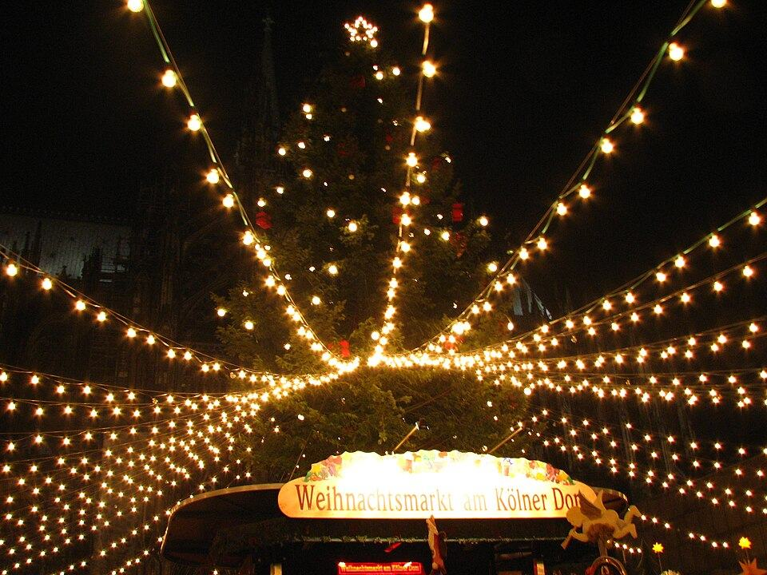

Cathedral market
Thu 11:00 to 22:00Roncalliplatz, right outside the cathedral and the station. It is the busiest market in the city. You'll know you're there when you walk under the canopy of lights over the entrance sign.
Where to find things
- The big Christmas tree stands in the middle of the square. Use it as your meeting point.
- Südtiroler Speckhütte, the South Tyrolean ham stall, is next to the Romano-Germanic Museum.
- The Wimmeltasse is a mug sold only at this market. Look for it at the Glühwein stalls.
- Cathedral waffles, the Original Kölner Dom Waffel, are at Café Riese.
- Also here: a large light tent and a stage with live music.
- Bonus: the small Adventsdorf on Am Hof, one minute away, has a glowing pyramid, Reibekuchen and Kölsch.